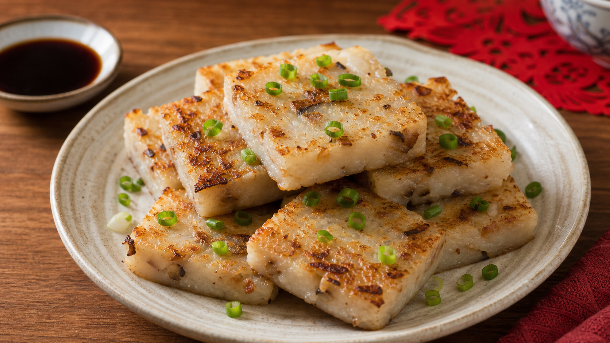
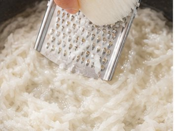
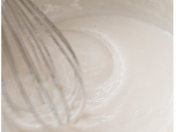
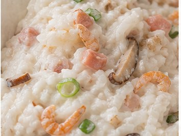
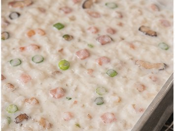
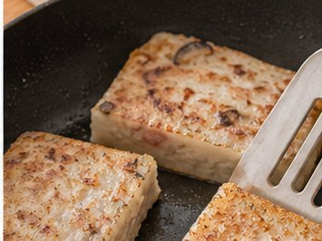

Reunion Dinner Recipe
Turnip Cake
Step by step, growth and new progress

About This Dish
For Cantonese, Hong Kong, Taiwanese and some Southern Chinese families, radish cake is often associated with New Year food, family preparation and festive sharing. It can also connect with ideas of progress and good fortune.
Ingredients
- Turnip (900 g)
- Rice flour (300 g)
- Water (600 ml)
- Dried shrimp (30 g)
- Dried shiitake mushrooms (3-4 pieces)
- Chinese sausage (2 pieces)
- Salt and white pepper
Method
-

Peel the white radish, then grate or shred it into thin strips. -

Mix the rice flour with water until smooth. Set aside. -

Stir-fry the dried prawns, Chinese sausage and shiitake mushrooms until fragrant, then set aside. Cook the shredded radish with a little water until translucent. Return the fillings to the pan, add salt and white pepper, then stir in the rice batter over low heat until it becomes a thick, semi-solid paste. -

Pour the mixture into a greased or lined mould. Steam for 45-60 minutes until set, then cool completely. -

Cut the cooled radish cake into slices. Pan-fry until both sides are golden and crisp.
Allergens
- Crustaceans, if dried shrimp is used
- Soy or gluten may appear in some added seasonings
- May contain pork if Chinese sausage is used
Please check product labels carefully, especially for sauces and prepared ingredients.